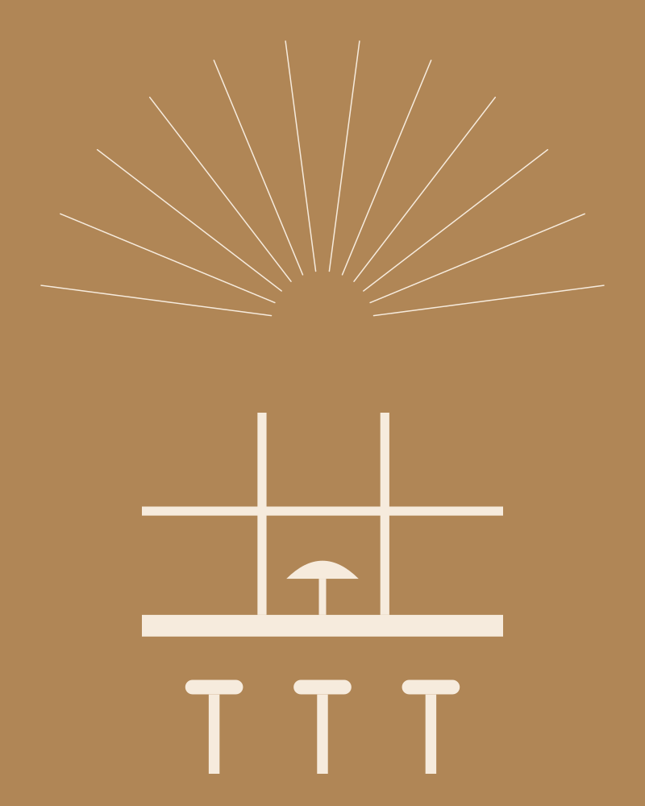
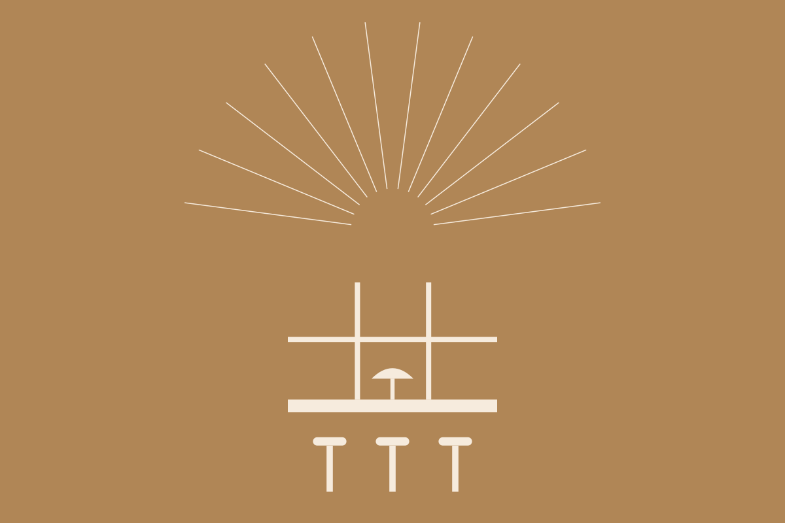
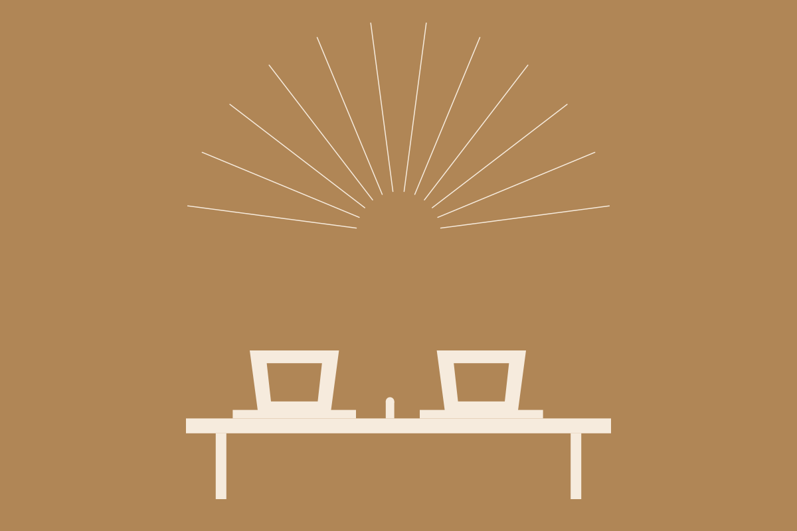
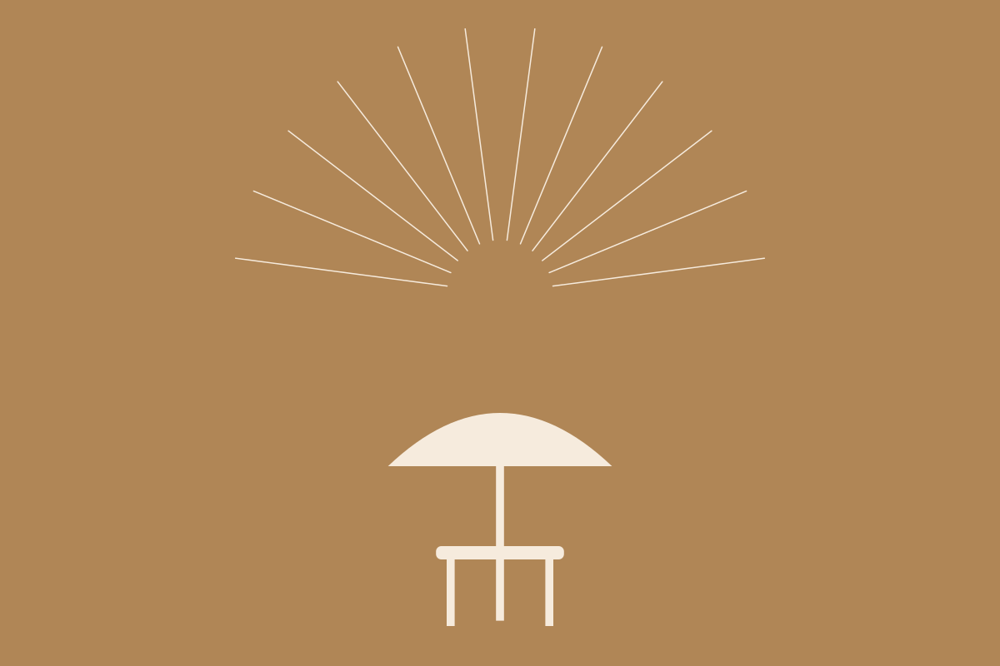
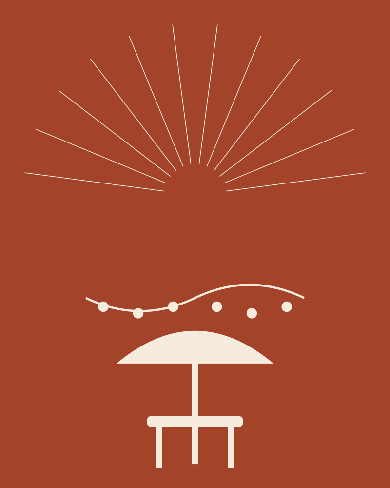
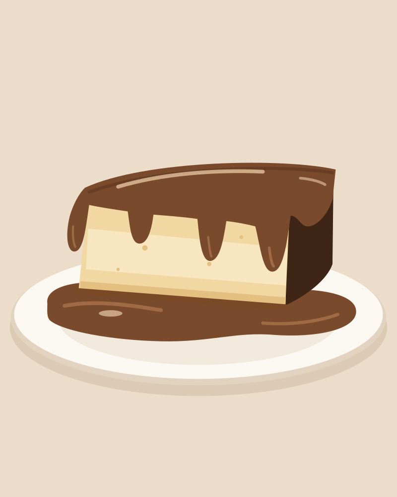

Bucak'ta kahve ve tatlı. Okulun hemen yanında.
Her gün sabah 9'dan gece 2'ye kadar açığız.

Her gün 09:00–02:00
Onaç Mah. 2304. Sk. No: 6/1, Bucak. Zeliha Tolunay Yüksekokulu'nun yanı.



Okuldan 1 dakika.
Sora Coffee yeni açıldı. Mehmet Akif Ersoy Üniversitesi Zeliha Tolunay Yüksekokulu'nun hemen yanındayız. Mekan geniş ve aydınlık, büyük camlardan ağaçlar görünüyor. Uzun bir çalışma masamız var, priz yeterli. Laptopunuzu açıp saatlerce oturabilirsiniz. Dışarıda şemsiyeli bir terasımız da var. Kahveyi tezgahta biz hazırlıyoruz. San Sebastian'ı kendimiz yapıyoruz, diğer tatlılar her gün taze geliyor.
Her gün sabah 9'dan gece 2'ye kadar açığız. Sınav haftasında da. Kütüphane kapandıktan sonra masanız burada.


Bunu biz yapıyoruz.
San Sebastian cheesecake. Üstü yanık, içi kremamsı. Mutfağımızda kendi elimizle yapıyoruz.
- Kaça kadar açıksınız?
- Her gün gece 2'ye kadar. Kapalı olduğumuz bir gün yok.
- Ders çalışabilir miyim?
- Evet. Uzun çalışma masamız var, priz yeterli.
- Paket alabilir miyim?
- Evet. Kahve de tatlı da paket olur.
- Dışarıda oturulur mu?
- Evet, şemsiyeli terasımız var.
Şimdi uğrayın.
Okuldan 1 dakika. Gece 2'ye kadar açığız, masanız hazır.